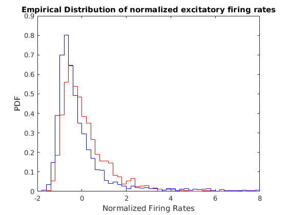
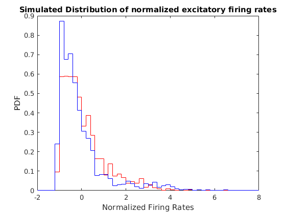
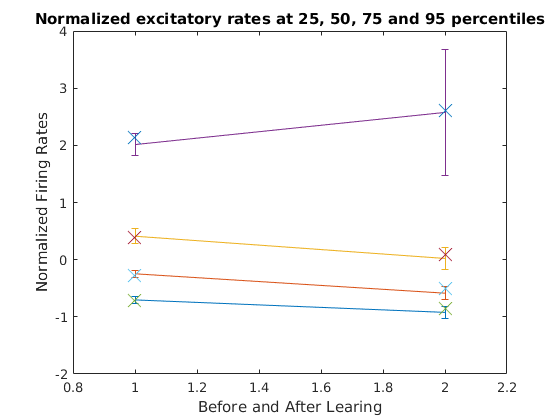
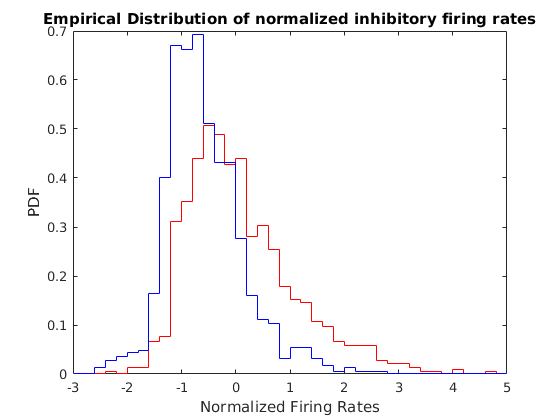
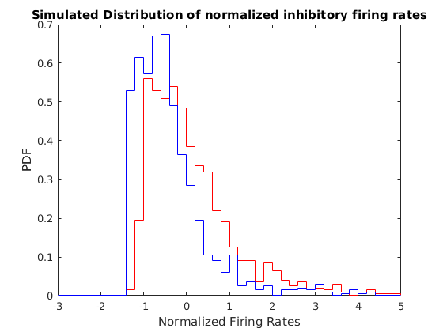
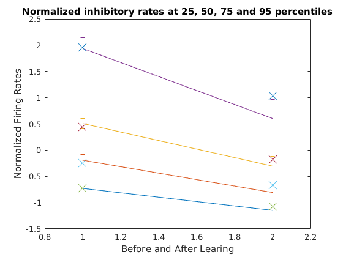

Contents
clear all; clc close all;
Data - Normalized firing rates, input-output transfer functions, input changes with learning
load('Data_Sheinberg_Neuron2012_FiringRates.mat') rng('default') % Individual neuronal firing rate in ascending order R_Nov_Emp_ind = sort(R_aver_t_nov,1); R_Fam_Emp_ind = sort(R_aver_t_fam,1); % Input computed from firing rates for novel stim I_Nov_Emp_ind = zeros(size(R_Nov_Emp_ind)); I_Fam_Emp_ind = zeros(size(R_Nov_Emp_ind)); mu_current = 0; sig_current = 1; % Compute normalized rates, input change for excitatory neurons index_ExcNeuron = [17 21 16 42 70 33 48 4 14 2 3 43 19 10]; NormalizedExcR_Nov = zeros(125,length(index_ExcNeuron)); NormalizedExcR_Fam = zeros(125,length(index_ExcNeuron)); NormalizedExcI_Fam = zeros(125,length(index_ExcNeuron)); NormalizedExcI_Nov = zeros(125,length(index_ExcNeuron)); for j= 1:length(index_ExcNeuron); k = index_ExcNeuron(j); y = R_Nov_Emp_ind(:,k); n = length(y); % Input current for nov stim follwoing Gaussian statistics with mean 0 and std 1 pCDF_Nov = (0.5:n-0.5)'./n; I_Nov_Emp_ind(:,k) = mu_current + sig_current*sqrt(2)*erfinv(2*pCDF_Nov-1); % Input current for fam stim index = find((y>0)&([diff(y);1]>0)); rate_emp = y(index); input_emp = I_Nov_Emp_ind(index,k); index = find(R_Fam_Emp_ind(:,k) >0); I_Fam_Emp_ind(index,k) = interp1(rate_emp,input_emp,R_Fam_Emp_ind(index,k),'linear','extrap'); index = find(R_Fam_Emp_ind(:,k) ==0); fraction_for_rate0 = length(index)/length(R_Fam_Emp_ind(:,k)); for i = 1:length(index) I_Fam_Emp_ind(index(i),k) = mu_current+sig_current*icdf('Normal',rand*fraction_for_rate0); end NormalizedExcR_Nov(:,j) = (R_Nov_Emp_ind(:,k)-mean(R_Nov_Emp_ind(:,k)))/std(R_Nov_Emp_ind(:,k)); NormalizedExcR_Fam(:,j) = (R_Fam_Emp_ind(:,k)-mean(R_Nov_Emp_ind(:,k)))/std(R_Nov_Emp_ind(:,k)); NormalizedExcI_Fam(:,j) = I_Fam_Emp_ind(:,k); NormalizedExcI_Nov(:,j) = I_Nov_Emp_ind(:,k); end % x: normalized post-synaptic firing rate, y_novel: input before learning, % y_change: input change AverNormExcR_Nov = max(NormalizedExcR_Nov(1,:)):0.01:min(NormalizedExcR_Nov(end,:)); YFam = zeros(length(AverNormExcR_Nov),length(index_ExcNeuron)); YNov = zeros(length(AverNormExcR_Nov),length(index_ExcNeuron)); for j = 1:length(index_ExcNeuron) YNov(:,j) = interp1(NormalizedExcR_Nov(:,j),NormalizedExcI_Nov(:,j),AverNormExcR_Nov,'linear','extrap'); YFam(:,j) = interp1(NormalizedExcR_Nov(:,j),NormalizedExcI_Fam(:,j),AverNormExcR_Nov,'linear','extrap'); end AverNormExcI_Nov = mean(YNov,2); AverNormExcI_Change = mean(YFam-YNov,2); % Compute normalized rates, input change for inhibitory neurons index_InhNeuron = [5 15 20 22 26 40 41 49 52]; NormalizedInhR_Nov = zeros(125,length(index_InhNeuron)); NormalizedInhR_Fam = zeros(125,length(index_InhNeuron)); NormalizedInhI_Fam = zeros(125,length(index_InhNeuron)); NormalizedInhI_Nov = zeros(125,length(index_InhNeuron)); for j= 1:length(index_InhNeuron); k = index_InhNeuron(j); y = R_Nov_Emp_ind(:,k); n = length(y); % Input current for nov stim follwoing Gaussian statistics with mean 0 and std 1 pCDF_Nov = (0.5:n-0.5)'./n; I_Nov_Emp_ind(:,k) = mu_current + sig_current*sqrt(2)*erfinv(2*pCDF_Nov-1); % Input current for fam stim index = find((y>0)&([diff(y);1]>0)); rate_emp = y(index); input_emp = I_Nov_Emp_ind(index,k); index = find(R_Fam_Emp_ind(:,k) >0); I_Fam_Emp_ind(index,k) = interp1(rate_emp,input_emp,R_Fam_Emp_ind(index,k),'linear','extrap'); index = find(R_Fam_Emp_ind(:,k) ==0); fraction_for_rate0 = length(index)/length(R_Fam_Emp_ind(:,k)); for i = 1:length(index) I_Fam_Emp_ind(index(i),k) = mu_current+sig_current*icdf('Normal',rand*fraction_for_rate0); end NormalizedInhR_Nov(:,j) = (R_Nov_Emp_ind(:,k)-mean(R_Nov_Emp_ind(:,k)))/std(R_Nov_Emp_ind(:,k)); NormalizedInhR_Fam(:,j) = (R_Fam_Emp_ind(:,k)-mean(R_Nov_Emp_ind(:,k)))/std(R_Nov_Emp_ind(:,k)); NormalizedInhI_Fam(:,j) = I_Fam_Emp_ind(:,k); NormalizedInhI_Nov(:,j) = I_Nov_Emp_ind(:,k); end AllNormalizedExcR_Nov = reshape(NormalizedExcR_Nov,[],1); % x: normalized post-synaptic firing rate, y_novel: input before learning, % y_change: input change AverNormInhR_Nov = max(max(NormalizedInhR_Nov(1,:)),-1):0.01:min(NormalizedInhR_Nov(end,:)); YFam = zeros(length(AverNormInhR_Nov),length(index_InhNeuron)); YNov = zeros(length(AverNormInhR_Nov),length(index_InhNeuron)); for j = 1:length(index_InhNeuron) YNov(:,j) = interp1(NormalizedInhR_Nov(:,j),NormalizedInhI_Nov(:,j),AverNormInhR_Nov,'linear','extrap'); YFam(:,j) = interp1(NormalizedInhR_Nov(:,j),NormalizedInhI_Fam(:,j),AverNormInhR_Nov,'linear','extrap'); end AverNormInhI_Nov = mean(YNov,2); AverNormInhI_Change = mean(YFam-YNov,2); % Data before and after learning for comparison to simulation RE_Nov_Emp = sort(reshape(R_Nov_Emp_ind(:,index_ExcNeuron),[],1)); RE_Fam_Emp = sort(reshape(R_Fam_Emp_ind(:,index_ExcNeuron),[],1)); RI_Nov_Emp = sort(reshape(R_Nov_Emp_ind(:,index_InhNeuron),[],1)); RI_Fam_Emp = sort(reshape(R_Fam_Emp_ind(:,index_InhNeuron),[],1)); m_exc = mean(RE_Nov_Emp); s_exc = std(RE_Nov_Emp); m_inh = mean(RI_Nov_Emp); s_inh = std(RI_Nov_Emp);
Simulation
Parameter for simulation
NE = 4000; NI = 1000; dt = 0.1; tauE = 20; tauI = 10; T = 200; wmax = 0.2; wee = 0.05; wei = 0.01; wie = 0.5; WEI = wei/NI*ones(NE,NI); WIE = wie/NE*ones(NI,NE); % Initializing WEE Ninit = 200; % # of learning to initialize connectivity matrix y = sort(RE_Nov_Emp); n = length(y); pCDF = (0.5:n-0.5)'./n; WEE_init = wee/NE*ones(NE,NE); Start = now; for i = 1:Ninit if any(i == floor([1, 5:5:100]*Ninit/100)) Lap = now; disp([' ', num2str(round(100*i/Ninit)), '%', ' Time elapsed: ', ... datestr(Lap-Start, 'HH:MM:SS')]) end u = rand(NE,1); RE_Nov_Init = interp1(pCDF,y,u,'linear','extrap'); InputChange = interp1(AverNormExcR_Nov,AverNormExcI_Change,(RE_Nov_Init-m_exc)/s_exc,'linear','extrap'); delW_post = (InputChange - NE*mean(mean(WEE_init))*(mean(RE_Fam_Emp)-m_exc)... + wei*(mean(RI_Fam_Emp)-m_inh))/(NE*var(RE_Nov_Emp)); delW = delW_post*(RE_Nov_Init-mean(RE_Nov_Init))'; WEE_init = WEE_init + delW; W_temp = reshape(WEE_init,[],1); W_temp(W_temp<0) = 0; W_temp(W_temp>wmax/NE) = wmax/NE; WEE_init = reshape(W_temp,NE,NE); end WEE_old = WEE_init; % Comparison of data and simulation for learning one stimulus u = sort(rand(NE,1)); y = sort(RE_Nov_Emp); n = length(y); pCDF = (0.5:n-0.5)'./n; RE_Nov_Sim = interp1(pCDF,y,u,'linear','extrap'); Norm_RE_Nov_Sim = (RE_Nov_Sim - m_exc)/s_exc; IE_Nov_Sim = interp1(AverNormExcR_Nov,AverNormExcI_Nov,Norm_RE_Nov_Sim,'linear','extrap'); InputChange_Sim = interp1(AverNormExcR_Nov,AverNormExcI_Change,Norm_RE_Nov_Sim,'linear','extrap'); u = sort(rand(NI,1)); y = sort(RI_Nov_Emp); n = length(y); pCDF = (0.5:n-0.5)'./n; RI_Nov_Sim = interp1(pCDF,y,u,'linear','extrap'); Norm_RI_Nov_Sim = (RI_Nov_Sim -m_inh)/s_inh; II_Nov_Sim = interp1(AverNormInhR_Nov,AverNormInhI_Nov,Norm_RI_Nov_Sim,'linear','extrap'); IEO = IE_Nov_Sim - WEE_old*RE_Nov_Sim + WEI*RI_Nov_Sim; IIO = II_Nov_Sim - WIE*RE_Nov_Sim; % Updating WEE with pre-syn dependence as r-mean(r) delW_post = (InputChange_Sim - NE*mean(mean(WEE_old))*(mean(RE_Fam_Emp)-m_exc)... + wei*(mean(RI_Fam_Emp)-m_inh))/(NE*var(RE_Nov_Emp)); delW = delW_post*(RE_Nov_Sim-mean(RE_Nov_Sim))'; WEE_new = WEE_old + delW; WEE_temp = reshape(WEE_new,[],1); WEE_temp(WEE_temp<0) = 0; WEE_temp(WEE_temp>wmax/NE) = wmax/NE; WEE_new = reshape(WEE_temp,NE,NE); rE = RE_Nov_Sim; rI = RI_Nov_Sim; for i = 1:round(T/dt) InputE = WEE_new*rE - WEI*rI + IEO; InputI = WIE*rE + IIO; rE_steady = m_exc + s_exc*interp1(AverNormExcI_Nov,AverNormExcR_Nov,InputE,'linear','extrap'); rE_steady(rE_steady<0) = 0; rE = rE + dt/tauE*(-rE + rE_steady); rI_steady = m_inh + s_inh*interp1(AverNormInhI_Nov,AverNormInhR_Nov,InputI,'linear','extrap'); rI_steady(rI_steady<0) = 0; rI = rI + dt/tauI*(-rI + rI_steady); end RE_Fam_Sim = rE; RI_Fam_Sim = rI;
1% Time elapsed: 00:00:00
5% Time elapsed: 00:00:01
10% Time elapsed: 00:00:03
15% Time elapsed: 00:00:05
20% Time elapsed: 00:00:07
25% Time elapsed: 00:00:09
30% Time elapsed: 00:00:11
35% Time elapsed: 00:00:13
40% Time elapsed: 00:00:15
45% Time elapsed: 00:00:17
50% Time elapsed: 00:00:19
55% Time elapsed: 00:00:21
60% Time elapsed: 00:00:23
65% Time elapsed: 00:00:25
70% Time elapsed: 00:00:27
75% Time elapsed: 00:00:29
80% Time elapsed: 00:00:31
85% Time elapsed: 00:00:33
90% Time elapsed: 00:00:35
95% Time elapsed: 00:00:37
100% Time elapsed: 00:00:39
Figures
dx = 0.2; x = -2:dx:8; h_EmpNov = hist(reshape(NormalizedExcR_Nov,[],1),x)/dx/(125*length(index_ExcNeuron)); h_EmpFam = hist(reshape(NormalizedExcR_Fam,[],1),x)/dx/(125*length(index_ExcNeuron)); figure(1); stairs(x,h_EmpNov,'r'); hold on;stairs(x,h_EmpFam,'b') title('Empirical Distribution of normalized excitatory firing rates') xlabel('Normalized Firing Rates');ylabel('PDF') h_SimNov = hist((RE_Nov_Sim-mean(RE_Nov_Sim))/std(RE_Nov_Sim),x)/dx/length(RE_Nov_Sim); h_SimFam = hist((RE_Fam_Sim-mean(RE_Nov_Sim))/std(RE_Nov_Sim),x)/dx/length(RE_Fam_Sim); figure(2);stairs(x,h_SimNov,'r');hold on;stairs(x,h_SimFam,'b') title('Simulated Distribution of normalized excitatory firing rates') xlabel('Normalized Firing Rates');ylabel('PDF') NormalizedExcR_Nov = sort(NormalizedExcR_Nov); NormalizedExcR_Fam = sort(NormalizedExcR_Fam); index = round([0.25 0.5 0.75 0.95]*125); figure(3);errorbar([mean(NormalizedExcR_Nov(index,:),2) mean(NormalizedExcR_Fam(index,:),2)]',[std(NormalizedExcR_Nov(index,:),0,2) std(NormalizedExcR_Fam(index,:),0,2)]') hold on index = round([0.25 0.5 0.75 0.95]*length(RE_Nov_Sim)); NormalizedExcSim_Nov = sort((RE_Nov_Sim -mean(RE_Nov_Sim))/std(RE_Nov_Sim)); NormalizedExcSim_Fam = sort((RE_Fam_Sim- mean(RE_Nov_Sim))/std(RE_Nov_Sim)); plot([NormalizedExcSim_Nov(index) NormalizedExcSim_Fam(index)]', 'x', 'MarkerSize',12) title('Normalized excitatory rates at 25, 50, 75 and 95 percentiles') xlabel('Before and After Learing');ylabel('Normalized Firing Rates'); dx = 0.2; x = -3:dx:5; h_EmpNov = hist(reshape(NormalizedInhR_Nov,[],1),x)/dx/(125*length(index_InhNeuron)); h_EmpFam = hist(reshape(NormalizedInhR_Fam,[],1),x)/dx/(125*length(index_InhNeuron)); figure(4); stairs(x,h_EmpNov,'r'); hold on;stairs(x,h_EmpFam,'b') title('Empirical Distribution of normalized inhibitory firing rates') xlabel('Normalized Firing Rates');ylabel('PDF') h_SimNov = hist((RI_Nov_Sim-mean(RI_Nov_Sim))/std(RI_Nov_Sim),x)/dx/length(RI_Nov_Sim); h_SimFam = hist((RI_Fam_Sim-mean(RI_Nov_Sim))/std(RI_Nov_Sim),x)/dx/length(RI_Fam_Sim); figure(5);stairs(x,h_SimNov,'r');hold on;stairs(x,h_SimFam,'b') title('Simulated Distribution of normalized inhibitory firing rates') xlabel('Normalized Firing Rates');ylabel('PDF') NormalizedInhR_Nov = sort(NormalizedInhR_Nov); NormalizedInhR_Fam = sort(NormalizedInhR_Fam); index = round([0.25 0.5 0.75 0.95]*125); figure(6);errorbar([mean(NormalizedInhR_Nov(index,:),2) mean(NormalizedInhR_Fam(index,:),2)]',[std(NormalizedInhR_Nov(index,:),0,2) std(NormalizedInhR_Fam(index,:),0,2)]') hold on index = round([0.25 0.5 0.75 0.95]*length(RI_Nov_Sim)); NormalizedInhSim_Nov = sort((RI_Nov_Sim -mean(RI_Nov_Sim))/std(RI_Nov_Sim)); NormalizedInhSim_Fam = sort((RI_Fam_Sim- mean(RI_Nov_Sim))/std(RI_Nov_Sim)); plot([NormalizedInhSim_Nov(index) NormalizedInhSim_Fam(index)]', 'x', 'MarkerSize',12) title('Normalized inhibitory rates at 25, 50, 75 and 95 percentiles') xlabel('Before and After Learing');ylabel('Normalized Firing Rates');     